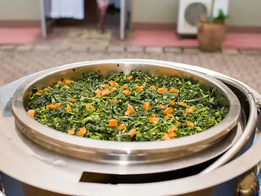
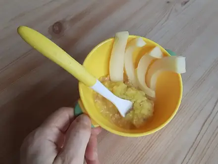
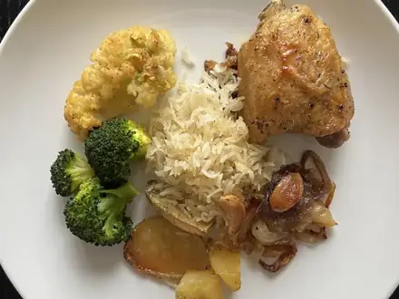
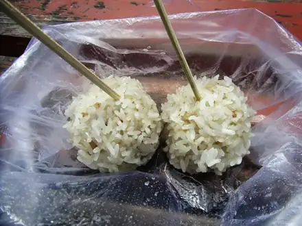
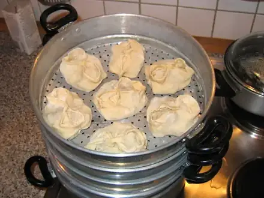

Блюда на пару
Мягкие и лёгкие блюда в пароварке или мультиварке. 9 рецептов: у каждого время, калории и БЖУ на порцию, пошаговые инструкции и список покупок
 Омлет на пару20 мин · 223 ккал · Б 16 г · Завтрак
Омлет на пару20 мин · 223 ккал · Б 16 г · Завтрак
Овощи на пару20 мин · 127 ккал · Б 5 г · Гарнир- Рыба на пару с лимоном25 мин · 170 ккал · Б 36 г · Второе блюдо

Пюре из кабачка и цветной капусты25 мин · 46 ккал · Б 2 г · Гарнир
Индейка на пару с овощами35 мин · 292 ккал · Б 50 г · Второе блюдо- Куриные котлеты на пару40 мин · 272 ккал · Б 29 г · Второе блюдо

Тефтели из индейки на пару50 мин · 221 ккал · Б 22 г · Второе блюдо
Манты с бараниной120 мин · 651 ккал · Б 29 г · Второе блюдо- Куриное суфле на пару45 мин · 177 ккал · Б 27 г · Второе блюдо
Другие подборки
- Что приготовить из курицы
- Что приготовить из фарша
- Что приготовить из мяса
- Что приготовить из рыбы
- Что приготовить из картошки
- Что приготовить из яиц
- Что приготовить из творога
- Что приготовить из кабачков
- Что приготовить из капусты
- Что приготовить из грибов
- Что приготовить из риса
- Что приготовить из макарон
- Что приготовить из гречки
- Быстрый ужин за 30 минут
- Быстрый завтрак за 20 минут
- Что приготовить на скорую руку
- ПП-рецепты: лёгкие блюда до 400 ккал
- Белковые блюда: от 25 г белка на порцию
- Дешёвые рецепты из простых продуктов
- Что приготовить ребёнку
- Постные блюда
- Что приготовить в духовке
- Простые супы
- Простые салаты
- Выпечка и десерты
- Блюда на праздничный стол
- Что приготовить из остатков